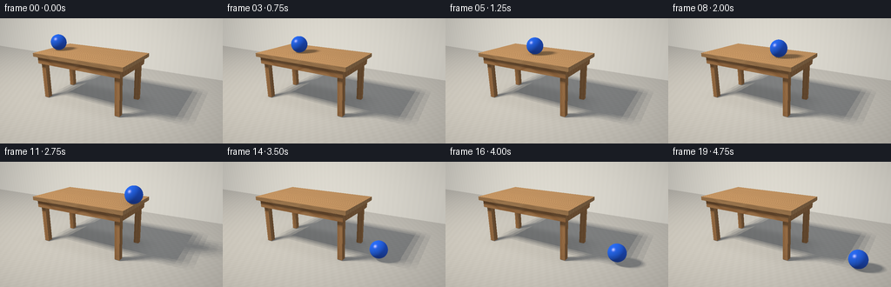
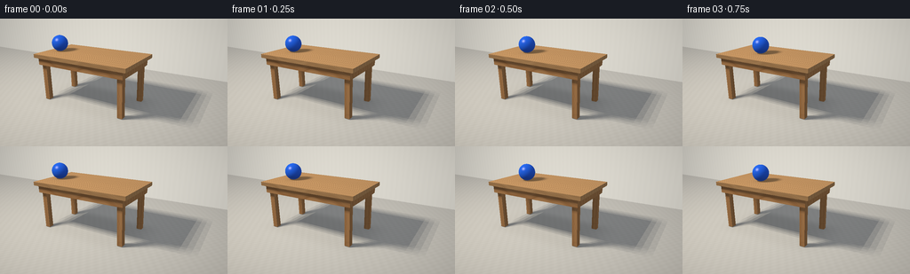

CODING AGENTS AS PIXEL WORLD MODELS
traex/GPT-6.1-Sol · instance_preservation_0020
点击播放 · 原生 RGB 像素
逐轮保存的候选
回放视频、检查图与代码变化。
每份候选均可单独播放。实际图片检查记录在下方工具轨迹中。
候选 01播放与检查图
点击播放 · 原生 RGB 像素


展开代码变化
--- 上一保存版本
+++ 本次保存版本
@@ -0,0 +1,276 @@
+"""Self-contained procedural RGB renderer: a blue ball rolling off an oak table.
+
+Only analytic intersections, numpy lighting and Pillow supersampling are used.
+"""
+from pathlib import Path
+import json
+import numpy as np
+from PIL import Image
+import artifact_io
+
+ROOT = Path(__file__).resolve().parent
+SPEC = json.loads((ROOT / 'task_spec.json').read_text())
+W, H, SS = SPEC['width'], SPEC['height'], 3
+SW, SH = W * SS, H * SS
+DTYPE = np.float32
+
+
+def unit(v):
+ return v / np.maximum(np.linalg.norm(v, axis=-1, keepdims=True), 1e-9)
+
+
+CAM = np.array([2.8, -5.4, 3.0], dtype=DTYPE)
+FORWARD = unit(np.array([-.3, 0, .7], dtype=DTYPE) - CAM)
+RIGHT = unit(np.cross(FORWARD, [0, 0, 1])).astype(DTYPE)
+UP = np.cross(RIGHT, FORWARD)
+yy, xx = np.mgrid[:SH, :SW].astype(DTYPE)
+RAYS = unit(FORWARD + ((xx.ravel() + .5) / SS - W / 2)[:, None] / 260 * RIGHT
+ - ((yy.ravel() + .5) / SS - H / 2)[:, None] / 260 * UP)
+N = len(RAYS)
+
+# Top, framing and four slightly inset legs. All parts are genuine 3-D geometry.
+BOXES = []
+
+
+def box(lo, hi, kind):
+ BOXES.append((np.array(lo, DTYPE), np.array(hi, DTYPE), kind))
+
+
+box([-2.5, -.85, 1.34], [.5, .85, 1.45], 'top')
+box([-2.39, -.78, 1.13], [.39, -.68, 1.34], 'apron')
+box([-2.39, .68, 1.13], [.39, .78, 1.34], 'apron')
+box([-2.4, -.68, 1.13], [-2.30, .68, 1.34], 'apron')
+box([.30, -.68, 1.13], [.40, .68, 1.34], 'apron')
+for x in (-2.27, .27):
+ for y in (-.62, .62):
+ box([x - .075, y - .075, .015], [x + .075, y + .075, 1.34], 'leg')
+
+LIGHTS = np.array([[-3.6 + dx, -3.4 + dy, 5.7]
+ for dx in (-.7, -.23, .23, .7)
+ for dy in (-.6, -.2, .2, .6)], DTYPE)
+FILL = unit(np.array([3.0, -1.0, 3.7], DTYPE))
+
+
+def intersect_box(orig, dirs, lo, hi):
+ inv = 1 / np.where(abs(dirs) < 1e-8, 1e-8, dirs)
+ a, b = (lo - orig) * inv, (hi - orig) * inv
+ near = np.minimum(a, b)
+ far = np.maximum(a, b)
+ tn, tf = near.max(axis=1), far.min(axis=1)
+ return np.where((tf >= np.maximum(tn, 0)) & (tn > .0001), tn, np.inf), near
+
+
+def texture(p, normal, material):
+ out = np.zeros_like(p)
+ floor = material == -1
+ wall = material == -2
+ # Matte warm-gray studio floor, extremely restrained stone variation.
+ q = p[floor]
+ noise = .007 * (np.sin(q[:, 0] * 27 + q[:, 1] * 19)
+ + np.sin(q[:, 0] * 43 - q[:, 1] * 31))
+ out[floor] = np.array([.48, .455, .41]) + noise[:, None]
+ q = p[wall]
+ out[wall] = np.array([.64, .625, .585]) + .005 * np.sin(q[:, 0:1] * 30)
+ for i, (_, _, kind) in enumerate(BOXES):
+ mask = material == i
+ q = p[mask]
+ if not len(q):
+ continue
+ if kind == 'leg':
+ along, across = q[:, 2], q[:, 0] + q[:, 1] * .6
+ else:
+ along, across = q[:, 0], q[:, 1] + q[:, 2] * .12
+ warp = across + .008 * np.sin(along * 3.4) + .004 * np.sin(along * 9 + across * 12)
+ lines = np.sin(warp * 230 + .4 * np.sin(along * 11))
+ fine = np.sin(warp * 870 + np.sin(along * 22))
+ broad = np.sin(warp * 43 + .3 * np.sin(along * 2))
+ grain = .034 * lines + .009 * fine + .025 * broad
+ grain -= .04 * np.maximum(0, np.sin(warp * 340 + along * 1.7)) ** 12
+ color = np.array([.47, .253, .105]) if kind == 'top' else np.array([.39, .19, .073])
+ out[mask] = color + grain[:, None] * np.array([1, .64, .30])
+ if kind == 'top':
+ # Three subtly distinct joined solid-oak boards, not tiled imagery.
+ board = np.floor((q[:, 1] + .85) / (.425))
+ out[mask] *= (1 + .025 * np.sin(board * 3))[:, None]
+ edge = np.mod(q[:, 1] + .85, .425)
+ joins = np.minimum(edge, .425 - edge) < .0015
+ out[np.flatnonzero(mask)[joins]] *= .80
+ return np.clip(out, 0, 1)
+
+
+def make_static():
+ distance = np.full(N, np.inf, DTYPE)
+ normals = np.zeros((N, 3), DTYPE)
+ material = np.full(N, -1, np.int16)
+ t = -CAM[2] / RAYS[:, 2]
+ floor = t > 0
+ distance[floor] = t[floor]
+ normals[floor] = [0, 0, 1]
+ # Neutral back wall and a slim baseboard give the room scale and depth.
+ t = (3.8 - CAM[1]) / RAYS[:, 1]
+ valid = (t > 0) & (t < distance)
+ distance[valid] = t[valid]
+ normals[valid] = [0, -1, 0]
+ material[valid] = -2
+ for i, (lo, hi, _) in enumerate(BOXES):
+ t, near = intersect_box(CAM, RAYS, lo, hi)
+ valid = t < distance
+ ids = np.flatnonzero(valid)
+ axes = near[valid].argmax(axis=1)
+ distance[valid] = t[valid]
+ normals[valid] = 0
+ normals[ids, axes] = -np.sign(RAYS[ids, axes])
+ material[valid] = i
+ points = CAM + RAYS * distance[:, None]
+ albedo = texture(points, normals, material)
+ ambient = .27 + .08 * np.maximum(0, normals[:, 2])
+ # Gentle proximity darkening under the tabletop and at the feet.
+ f = material == -1
+ q = points[f]
+ under = np.exp(-((q[:, 0] + 1) / 1.65) ** 6 - (q[:, 1] / .94) ** 6)
+ ambient[f] *= 1 - .28 * under
+ for lx in (-2.27, .27):
+ for ly in (-.62, .62):
+ ambient[f] *= 1 - .20 * np.exp(-((q[:, 0] - lx) ** 2 + (q[:, 1] - ly) ** 2) / .012)
+ lighting = ambient[:, None] * np.array([.89, .95, 1.05])
+ direct = []
+ origin = points + normals * .0015
+ view = -RAYS
+ for light in LIGHTS:
+ delta = light - origin
+ light_distance = np.linalg.norm(delta, axis=1)
+ direction = delta / light_distance[:, None]
+ visible = np.ones(N, bool)
+ for lo, hi, _ in BOXES:
+ hit, _ = intersect_box(origin, direction, lo, hi)
+ visible &= hit > light_distance
+ lambert = np.maximum(0, (normals * direction).sum(axis=1))
+ illumination = .92 * lambert * visible / len(LIGHTS)
+ half = unit(direction + view)
+ glossy = np.maximum(0, (normals * half).sum(axis=1)) ** 65
+ specular = .065 * glossy * visible / len(LIGHTS)
+ specular[material < 0] *= .16
+ direct.append((illumination, specular))
+ lighting += illumination[:, None] * np.array([1.04, 1., .91])
+ lighting += (.13 * np.maximum(0, normals @ FILL))[:, None] * np.array([.75, .86, 1.0])
+ color = albedo * lighting
+ for _, spec in direct:
+ color += spec[:, None] * np.array([1.0, .91, .76])
+ return distance, points, normals, material, albedo, color, direct
+
+
+RADIUS = .24
+START, SPEED, EDGE = -2.12, .93, .5
+ROLL_END = (EDGE - START) / SPEED
+GRAVITY = 6.0
+FLIGHT = np.sqrt(2 * 1.45 / GRAVITY)
+IMPACT = ROLL_END + FLIGHT
+
+
+def ball_position(t):
+ if t <= ROLL_END:
+ return np.array([START + SPEED * t, -.12, 1.45 + RADIUS], DTYPE)
+ elapsed = t - ROLL_END
+ if elapsed <= FLIGHT:
+ return np.array([EDGE + SPEED * elapsed, -.12,
+ 1.45 + RADIUS - .5 * GRAVITY * elapsed ** 2], DTYPE)
+ after = t - IMPACT
+ rebound = GRAVITY * FLIGHT * .38
+ z = RADIUS
+ remaining = after
+ for _ in range(4):
+ duration = 2 * rebound / GRAVITY
+ if remaining < duration:
+ z += rebound * remaining - .5 * GRAVITY * remaining ** 2
+ break
+ remaining -= duration
+ rebound *= .38
+ # Horizontal speed is preserved at first impact, then smoothly loses energy.
+ drag = .47
+ travel = (SPEED / drag) * (1 - np.exp(-drag * after))
+ return np.array([EDGE + SPEED * FLIGHT + travel, -.12, z], DTYPE)
+
+
+def ball_shadow(points, normals, center, light):
+ origin = points + normals * .002
+ delta = light - origin
+ light_length = np.linalg.norm(delta, axis=1)
+ direction = delta / light_length[:, None]
+ oc = center - origin
+ along = (oc * direction).sum(axis=1)
+ perp2 = (oc * oc).sum(axis=1) - along ** 2
+ return (perp2 < RADIUS ** 2) & (along > 0) & (along < light_length)
+
+
+def render_ball(center, t, static):
+ distances, points, normals, material, albedo, base, direct = static
+ frame = base.copy()
+ # Cast the moving sphere's soft shadow onto both wood and floor.
+ for light, (illumination, specular) in zip(LIGHTS, direct):
+ blocked = ball_shadow(points, normals, center, light)
+ frame[blocked] -= albedo[blocked] * illumination[blocked, None] * np.array([1.04, 1., .91])
+ frame[blocked] -= specular[blocked, None] * np.array([1., .91, .76])
+ # Extra close-range occlusion anchors the ball, but fades naturally in flight.
+ horizontal2 = ((points[:, :2] - center[:2]) ** 2).sum(axis=1)
+ vertical_gap = np.maximum(0, center[2] - RADIUS - points[:, 2])
+ contact = .19 * np.exp(-horizontal2 / .045 - vertical_gap * 18)
+ contact *= normals[:, 2] > .9
+ frame *= (1 - contact[:, None])
+ oc = CAM - center
+ b = RAYS @ oc
+ discriminant = b * b - ((oc @ oc) - RADIUS ** 2)
+ hit_distance = -b - np.sqrt(np.maximum(discriminant, 0))
+ mask = (discriminant >= 0) & (hit_distance > 0) & (hit_distance < distances)
+ sphere_p = CAM + RAYS[mask] * hit_distance[mask, None]
+ sphere_n = unit(sphere_p - center)
+ view = -RAYS[mask]
+ # Subtle molded seam and minute rubber variation rotate with the same ball.
+ angle = (center[0] - START) / RADIUS
+ c, s = np.cos(angle), np.sin(angle)
+ nx = c * sphere_n[:, 0] - s * sphere_n[:, 2]
+ nz = s * sphere_n[:, 0] + c * sphere_n[:, 2]
+ ny = sphere_n[:, 1]
+ seam = np.exp(-(nz / .017) ** 2)
+ micro = .009 * np.sin(nx * 104 + ny * 89) * np.sin(nz * 133 - nx * 47)
+ blue = np.array([.012, .105, .62])[None, :] * (1 - .15 * seam + micro)[:, None]
+ illumination = (.30 + .10 * sphere_n[:, 2])[:, None] * np.array([.72, .85, 1.1])
+ illumination += (.14 * np.maximum(0, sphere_n @ FILL))[:, None] * np.array([.65, .8, 1.1])
+ reflection = np.zeros_like(sphere_n)
+ for light in LIGHTS:
+ ld = unit(light - sphere_p)
+ lambert = np.maximum(0, (sphere_n * ld).sum(axis=1))
+ illumination += .95 / len(LIGHTS) * lambert[:, None] * np.array([1., .99, .95])
+ halfway = unit(ld + view)
+ spec = np.maximum(0, (sphere_n * halfway).sum(axis=1)) ** 92
+ reflection += .48 / len(LIGHTS) * spec[:, None] * np.array([1., 1., 1.])
+ fresnel = .025 + .15 * (1 - np.maximum(0, (sphere_n * view).sum(axis=1))) ** 5
+ reflection += fresnel[:, None] * np.array([.18, .24, .32])
+ frame[mask] = blue * illumination + reflection
+ return frame
+
+
+def encode(linear):
+ # Fixed exposure, photographic gamma and restrained vignette throughout.
+ linear = np.maximum(linear * 1.13, 0)
+ rgb = np.where(linear <= .0031308, linear * 12.92,
+ 1.055 * np.power(linear, 1 / 2.4) - .055)
+ vignette = 1 - .065 * (((xx - SW / 2) / (SW / 2)) ** 2
+ + ((yy - SH / 2) / (SH / 2)) ** 2)
+ rgb = rgb.reshape(SH, SW, 3) * vignette[:, :, None]
+ image = Image.fromarray(np.uint8(np.clip(rgb * 255, 0, 255)))
+ return np.asarray(image.resize((W, H), Image.Resampling.LANCZOS))
+
+
+def main():
+ static = make_static()
+ frames = []
+ for index in range(SPEC['frames']):
+ t = index / SPEC['fps']
+ frames.append(encode(render_ball(ball_position(t), t, static)))
+ print(f'Rendered {index + 1}/{SPEC["frames"]}', flush=True)
+ artifact_io.save(np.stack(frames).astype(np.uint8), ROOT)
+ print('Saved RGB video and all required artifacts.', flush=True)
+
+
+if __name__ == '__main__':
+ main()
可观测工具轨迹
实际执行的命令与返回图片。
命令 1exit 0
/bin/bash -lc 'ls -la; cat prompt.txt; cat GENERATION_RULES.md; cat task_spec.json'
命令 2exit 0
/bin/bash -lc 'cat artifact_io.py'
命令 3exit 0
/bin/bash -lc "python - <<'PY' import numpy as np cam=np.array([3.15,-5.7,3.05]);target=np.array([-.05,0,.65]);f=target-cam;f/=np.linalg.norm(f);r=np.cross(f,[0,0,1]);r/=np.linalg.norm(r);u=np.cross(r,f);foc=144/2/np.tan(np.deg2rad(35)/2) for p in [(-2,-.7,1.3),(-2,.7,1.3),(.7,-.7,1.3),(.7,.7,1.3),(-1.75,-.15,1.52),(.7,-.15,1.52),(1.65,-.15,.22),(2,-.15,.22),(-2,-.7,0)]: v=np.array(p)-cam; print(p, np.round([128+v@r/(v@f)*foc,72-v@u/(v@f)*foc],1)) PY"
命令 4exit 0
/bin/bash -lc "python - <<'PY' import numpy as np cam=np.array([2.8,-5.4,3]);target=np.array([-.3,0,.7]);f=target-cam;f/=np.linalg.norm(f);r=np.cross(f,[0,0,1]);r/=np.linalg.norm(r);u=np.cross(r,f) for p in [(-2.5,-.85,1.45),(-2.5,.85,1.45),(.5,-.85,1.45),(.5,.85,1.45),(-2.15,-.12,1.69),(.5,-.12,1.69),(1.5,-.12,.24),(2,-.12,.24)]: v=np.array(p)-cam;print(p,np.round([128+260*(v@r)/(v@f),72-260*(v@u)/(v@f)],1)) PY"
命令 5exit 0
/bin/bash -lc 'command -v ffmpeg || true'
命令 6exit 0
/bin/bash -lc 'OPENBLAS_NUM_THREADS=1 OMP_NUM_THREADS=1 python generate.py'
命令 7exit 0
/bin/bash -lc "python - <<'PY'
from pathlib import Path
from PIL import Image
import numpy as np
p=np.load('pixels.npz')['pixels'];print('RGB packed tensor:',p.shape,p.dtype)
for i in [0,5,10,12,13,14,15,17,19]:
a=np.asarray(Image.open(f'frames/{i:02d}.png')).astype(int); m=(a[:,:,2]>a[:,:,0]+35)&(a[:,:,2]>a[:,:,1]+35);y,x=np.where(m);print(f'{i:02}: blue-ball pixels={m.sum()}, center=({x.mean():.1f},{y.mean():.1f}), mean RGB={a.mean((0,1)).round(1)}')
for name in ['generate.py','pixels.npz','index.html','inspection.png','transition_check.png']:
print(name,Path(name).stat().st_size)
assert len(list(Path('frames').glob('*.png')))==20
assert p.shape==(144,256,20)
PY"保存候选 1 份；完成命令 7 次；可验证图片返回 0 张。原始 API 响应与完整日志保留在本地。